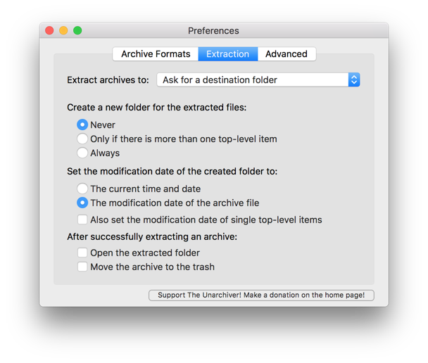
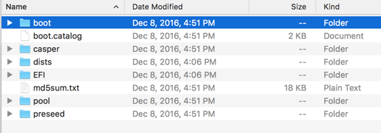
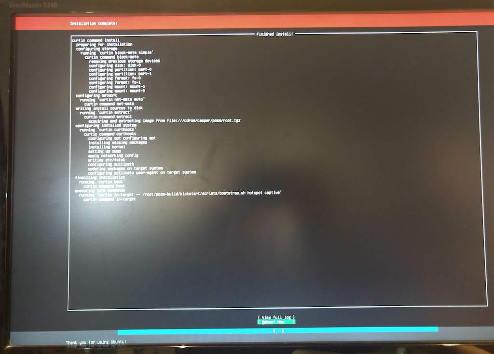

Getting a POSM¶
Todo
This section is being edited and updated. Please let us know if you find any errors or omissions.
Interested in getting a POSM? This involves a little bit of DIY, but advanced tech skills are not required. This site has instructions that walk through the whole process.
First, you order the hardware kit (you’ll have to assemble a few things). Next, you load the core software onto the device for a first-time install. This transforms the unit into a POSM. After that, the POSM is ready to go and can be used over and over again.
Anatomy of a POSM¶
Hardware¶
Our initial hardware target is an Intel NUC w/ a 256GB SSD and 8GB of RAM. Initial measurements show it drawing less than 10W. It can also operate on a range of voltages between 12-19V. The spec’d components for the original version of POSM run about USD ~$300 in total:
- Intel NUC Kit - NUC5PPYH - 2.6 GHz quad core Pentium (N3700, 6W TDP). It includes a basic case. The v0.8.0 release was also tested on the NUC7PJYH.
- Samsung 850 EVO 250GB
- 8GB 1600MHz DDR3L CL9 SODIMM
- Optionally, Wireless N Dual Band + Bluetooth 4.0 M.2 NGFF Combo Card (TPE-M2NCRD) (which we’ve tested) or the newer version of that card Wireless N M.2 NGFF Card v2 (TPE-M2NCRD2). This is needed if you plan to have more than 14 devices connected at a time. Replace the stock wireless card with this.
If you want to be able to use OpenDroneMap with POSM, then you will want slightly more souped-up hardware with greater processing power. Instead of the NUC unit above, order the following, somewhat more expensive model:
- Intel NUC kit - NUC6i7KYK
- Samsung 960 EVO Series - 500GB NVMe - M.2 Internal SSD (MZ-V6E500BW) or larger (or equivalent)
- Crucial 32GB Kit (16GBx2) DDR4 2133 MT/s (PC4-17000) DR x8 SODIMM 260-Pin Memory - CT2K16G4SFD8213 (or equivalent)
Follow the manufacturers’ instructions when assembling your hardware.
Note
Unfortunately, the POSM installer on Raspberry Pi won’t work. Raspbian is based on Debian, not Ubuntu. Also, the Pi CPU architecture is ARM rather than x86/x64 by Intel or AMD. Docker-based apps have to be packaged specifically for ARM architecture, which the POSM apps are not. A standalone installation of OpenMapKit Server should be possible, but we don’t have any guidance on that.
Software¶
Once you’ve ordered and assembled the hardware components, you’ll load the device with a core software package that transforms it into a POSM. The package includes the core POSM software, all of the tools that POSM supports, and other downloads/apps to support mapping and mobile data collection.
The latest POSM download can be found on the project’s releases page on GitHub.
Other things you will need¶
The POSM hardware is a mini-computer. To set it up for the very first time, you’ll need to plug in the following:
- USB keyboard
- external monitor or TV with suitable video input
- USB memory stick (large enough to fit the POSM release you plan on installing)
When provisioning the POSM for mapping a specific area you’ll also need an internet connection.
First-time install¶
First, download the latest POSM release and create a USB installer from it.
If you plan on using OpenDroneMap to process imagery, you’ll want to download the superposm-0.x.x.iso variant. Otherwise, you’re fine with the standard posm-0.x.x.iso.
Etcher¶
Etcher is the easiest way to create a USB installer.
- Download Etcher and install it on your computer.
- Insert a USB memory stick. It will be wiped of any existing data in the process, so make sure you don’t have any files on it that you want to keep! It needs to be bigger than the POSM release file (4GB or larger USB for the standard POSM, 8GB or larger for the superPOSM).
- Open Etcher. Select the iso file, select the USB media drive, and click “Flash!”. The program will go through “Flashing” and “Validating”. It will take a few minutes.
- Once the program completes you can eject the USB drive. You’re ready for the next step. If you’ve used Etcher you can skip down to POSM first-time install.
Manual configuration¶
Instead of using Etcher, you can also create the USB installer manually by extracting the POSM software into a set of folders on your USB.
Configuring the USB stick¶
First you’ll have to change the USB formatting (UEFI booting is the technical term for what’s being facilitated).
Mac¶
On a Mac, plug in your USB stick and open Disk Utility. Navigate to the USB stick and click “Erase”.
Give the USB stick a name. Set the format to MS-DOS (FAT) and the scheme to
GUID Partition Map. Then click “Erase”, which will delete all existing files
and reformat the drive to make it compatible with the POSM. See below:
Windows¶
On a PC, connect the USB drive, then go to “Computer” or “My Computer”, right-click the drive and select “Format…” from the menu. Set the drive to FAT.
Extracting the POSM download (AKA “ISO file”) onto the USB stick¶
If you don’t use command line, then moving the POSM download bundle involves downloading a file extractor to extract it (we use The Unarchiver for Mac or 7-Zip for Windows).
On a Mac, open The Unarchiver and navigate to the Extraction tab. Where it says “Create a new folder for the extracted files”, select Never. The reason we do this is because the POSM download has to be extracted and moved onto the USB stick. Most file extractors will place extracted files into an overall folder. The POSM unit can’t handle this, and you can’t just manually move everything one level up because there are hidden files that will get missed.
Use your extraction client (The Unarchiver or 7-Zip) to extract the download (posm-0.7.2.iso) from your computer onto the USB stick… again, making sure that the files do not end up in an overall folder. On a Mac, you do this by right-clicking the posm-0.7.2.iso file and selecting Open with… … The Unarchiver. Set the destination folder to the USB stick and press “Extract”. If you don’t see the option in the right-click menu, then open The Unarchiver app and go to File then select Unarchive To… and first select the iso file and then select the USB drive.
As an alternative to The Unarchiver, on a Mac you can install 7z with homebrew and then use it to extract the contents:
brew install p7zip
7z x PATH/TO/FILE/posm-0.7.2.iso -o/Volumes/NAME_OF_USB
Regardless of the extraction method, the contents of your USB stick should look like this:
POSM first-time install¶
Alright, you’re ready. Take the Intel NUC unit that you’ve assembled and plug in an external monitor, a keyboard, and the USB stick you’ve prepared. Turn the power on.
You’ll see a dark boot screen appear on your monitor with the Intel NUC logo and a few options in the bottom-right corner. Press F10 when prompted. You’ll have to be quick with this because the prompt only lasts a few seconds. If you miss it, then just turn the power off and try again.
This will open a menu (see below, note that in the image where it reads SanDisk it will read with a description of your USB drive - for example Lexar USB Flash Drive 1100) where you have to select which device to boot
from. Use the arrow keys to select your USB stick, then hit enter.
You’ll be prompted by a screen that says GNU GRUB at the top and asks if you want to do an automated install. You do. You can also wait 10 seconds and it will start the automated install on its own.
That’s it. The software will install onto the NUC unit, transforming it into a POSM. This can take some time. Finally, the screen will look like this when the whole process is complete.
Disconnect the USB stick and with Reboot Now selected, press Enter.
After the reboot, you’ll be prompted with a screen asking you for login credentials. You can log in if you want. The
username is root and password is posm. Finally, the screen will look like this when the whole process is complete.
If the login prompt is obscured by other text written to the console afterwards. Pressing Enter a few times or ^L should reset the screen.
You can disconnect the keyboard and monitor. The POSM is set up and ready for use.
Reminder: you only need to do this the very first time you assemble your POSM and set it up (or upgrade the core POSM software). After that, it’s just a matter of working with data, forms, and such.
Note: if you ever want to wipe and reinstall the core POSM software (to install
a new version, etc), then it’s the same process - prep the USB stick, plug in
the monitor etc, and press F10 when prompted. The NUC unit will overwrite the
existing installation with new software from the USB stick.
Accessing admin settings¶
As of the 0.8.0 release of POSM (via posm/posm-admin-ui@2.2.0), the admin sidebar does not include links to “admin” functionality by default.
To access general-purpose admin functionality (backups at the moment), go directly to http://posm.io/posm/admin.
To access network settings, go directly to http://posm.io/posm/settings.
To include links to admin functionality, edit /opt/posm-www/config.json and remove "showAdmin": false,.
Alternately, set posm_show_admin=true in kickstart/etc/settings prior to installation (only relevant when installing from source).
Networking¶
POSM is configured to be a WiFi Access Point (AP), allowing laptops and phones to connect to it directly even if no other network is available. It supports 2 modes: “captive portal” and “bridged”.
In “captive portal” mode, after clients connect, all HTTP traffic will be intercepted and redirected
to posm.io, which is POSM’s landing page. Requests to web sites over HTTPS will fail. Only access
to POSM services (posm.io and osm.posm.io) is allowed in this mode. If the WAN port is plugged
into an active network, the POSM itself will have network access but clients will not.
In “bridged” mode, clients will not be automatically redirected and will instead have internet access, forwarded through whichever WAN device is connected (see “WAN” below).
Switching between these modes can be done using POSM Admin.
WiFi¶
When using POSM with one of the recommended NUCs, the pre-installed wireless cards can only be used in 802.11a/g/b mode (this is the default when setting up a new device). Additionally, these cards are only able to support 15 clients (including the POSM device itself). If you need to support more concurrent clients, we recommend replacing the wireless interface controller (WNIC) with one which supports more clients (we don’t know the actual limit, but it’s at least 25) and supports 802.11n mode (faster) such as Wireless N Dual Band + Bluetooth 4.0 M.2 NGFF Combo Card (TPE-M2NCRD) (which we’ve tested) or the newer version of that card Wireless N M.2 NGFF Card v2 (TPE-M2NCRD2).
If you replace the card on an existing device, you’ll need to clear out the udev rules to
allow Linux to identify the new card. You’ll also want to re-bootstrap wifi after changing
posm_wifi_80211n to 1 in order to enable 802.11n mode.
Todo
Add details about how to clear out the udev rules. Running udevadm control --reload-rules && udevadm trigger may work.
An additional option which we don’t have much experience with yet is to purchase something like a Ubiquiti UAP-AC-LITE and plug it into the LAN interface (which doesn’t actually exist on the NUCs, since they only have a single NIC which is configured as a WAN port). This will offload the management of wireless clients (but not DNS or DHCP), allowing more concurrent clients to connect (127 per radio; some UAPs include multiple radios). This approach is also assumed to increase the WiFi range.
WAN¶
When in “bridge” mode, POSM is configured to pass traffic to non-wlan interfaces. Practically speaking, this means that you can plug in an ethernet cable to the WAN port, POSM will obtain an IP address and DNS servers using DHCP, and will configure iptables to forward traffic.
When used with an Android device that has USB tethering enabled, plugging in a USB cable will create an additional network interface and POSM will attempt to forward traffic to it.
Behavior with both a wired network and a tethered Android device is unknown; it’s suspected that the interface plugged in last will be used to forward traffic. Unplugging either will likely remove all forwarding rules.
For more information about this, see the hotplug scripts in TODO.
Some services on the POSM device are available via the WAN port, most usefully SSH. DNS, DHCP, and SMB are limited to the LAN. POSM uses avahi-daemon to broadcast its presence on the WAN, meaning that ssh root@posm.local may be used to connect even if its IP address is unknown.
POSM has also been configured to support link-local connections (TODO WTF is this actually called? these are the 169.whatever IPS), allowing an ethernet cable to be plugged into both the WAN port and a client. Both devices will auto-assign themselves IP addresses in the same rang. This, combined with mDNS broadcasts, allows direct connections. Beyond facilitating debugging without a display, this is the fastest way to copy data to or from the device.